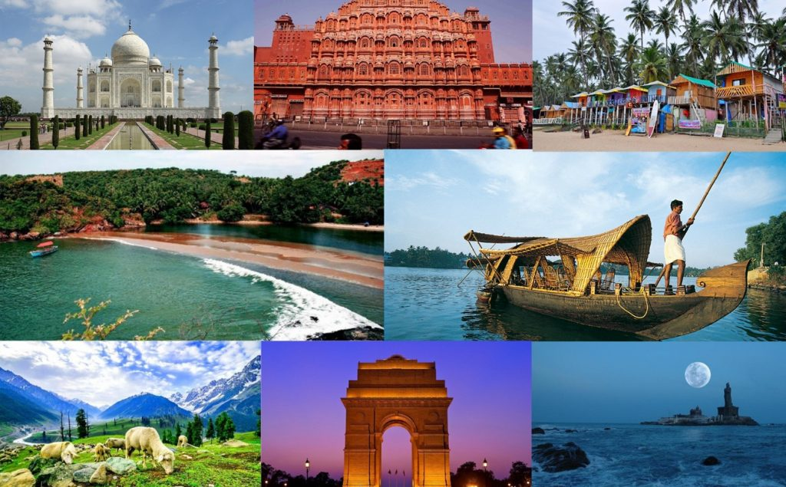

UTTARAKHAND VILLAGE AND CITY SIGHTSEEING

Stuck in work life,Get in fun life !!!
The main motto of this website is for the promotion and development of tourism of the
Incredible India. India is an nation of temples, monuments, history of great people, colorful
dresses, good food, hundreds of languages and culture. One of the most awesome thing in India
is that for every 10 mile there is a different language and culture. So why not look into the
beauty of the old temples built without engineers instead of a modern skyscraper,why not take
look into the bravery of the ancient kings instead of the graphics made marvels,why not take a
look into the real lives of people instead of netflexing at night. This website introduce into the
world of an incredible vacation starting from the snows of Jammu to the sands of Kanyakumari,
we got it all.
Don't Know where to start ? Let us show you the way...
Uttarakhand otherwise popularly known as Uttaranchal is located in the downsteeps of the himachal pradhesh well
known for its rich pilgrims and religious significant areas.Apart from that it has numerous villages
that best for insta posts cause of its magnificent mountain tips,views and famous local things
that are different for each villages.This page is a detailed description of such villages and their
speciality in form of art, food or handicrafts that makes them unique .